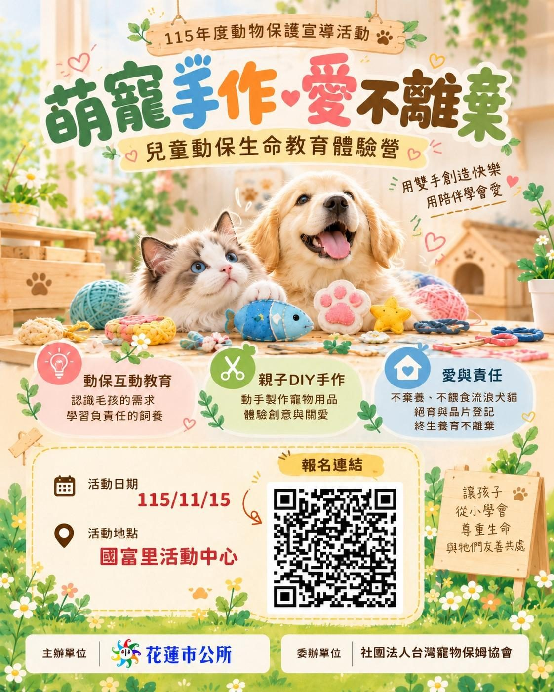

萌寵手作愛不離棄 花蓮動保體驗營開放報名

可樂電子報小編/編輯
毛小孩不只是寵物，更是重要的家人。為推廣動物保護觀念，讓愛護動物的理念走進日常生活，花蓮市公所將於11月15日（星期日）在國富里社區活動中心舉辦「萌寵手作・愛不離棄」動保生命教育體驗營，邀請大朋友、小朋友透過表演、互動遊戲與創意手作，認識動物保護的重要性，也為家人與毛孩留下一段溫暖的回憶。

市公所表示，活動分上午場與下午場，上午場9時至12時、下午場1時30分至4時30分，兩場內容均包含動保主題表演、趣味有獎問答、寵物用品DIY手作體驗及作品成果分享，每場時間約3小時，採網路報名，每場限額50名，名額有限，歡迎有興趣的市民朋友把握機會，一起在實作中學習。

活動以「認識動物、學習照護、實踐飼主責任」為主軸，參與的大小朋友可以在手作過程中理解毛孩的需要，也從互動問答建立正確的飼養觀念。市公所期盼，透過體驗營把生硬的法規與照護知識，轉化成親子都聽得懂的語言，讓孩子在互動中自然學會尊重生命，也讓家長重新檢視飼養習慣，讓愛護動物不只是口號。
報名自即日起至11月12日止，額滿為止，民眾可透過網路表單報名，網址為 https://forms.gle/JMgYNFxKK3sBQ79g8 。市公所提醒，活動對象為花蓮市轄內市民，歡迎親子家庭共同參與，上、下午場名額各50名，建議有興趣的市民及早登記，以免向隅；相關疑問也可於上班時間洽花蓮市公所詢問。
本活動由花蓮市公所主辦，社團法人臺灣寵物保姆協會協辦。市公所誠摯邀請市民朋友攜手參與，透過一場充滿創意與溫度的手作體驗，從認識動物、學習照護到實踐飼主責任，讓愛護動物從生活中開始；也期待友善動物的種子在家庭與社區裡慢慢發芽，讓花蓮一步步成為對動物更友善的城市，也讓孩子在日常裡練習溫柔。
🌟 掌握花蓮在地第一手資訊・歡迎訂閱追蹤
深度紀實報導、在地精采影音專題，第一時間接收最新消息！